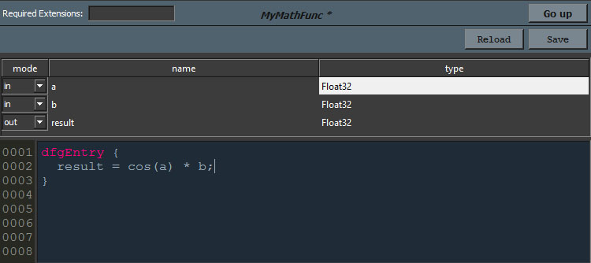

KL Function Editor¶
Within Canvas you can directly create custom KL function nodes. These nodes run through the same just-in-time compilation process utilizing LLVM as do graphs.
To create custom KL functions, right click the empty space in a graph view and choose New empty function. This will create the function. To edit it, double shift-click the new node or open the context menu by right-clicking the node and choose Edit. This will open the KL function editor.
The KL function editor essentially contains two sections: The port list and the code window.
KL function ports¶
You can add and remove ports by defining their port type, name as well as data type. By default port types are polymorphic, but you can pick fixed types. If you want to know more about KL function polymorphism, please see Polymorphic nodes. Alternatively you can also add a port by right clicking any entry in the port list and choose Add new port.
To remove a port, right click it and choose Delete port in the context menu.
注釈
The KL function editor port list also supports the Ctrl-Enter (Add new port) and Ctrl-Backspace (Delete port) keyboard shortcuts.
Ports can be referenced by name in the KL code below.
注釈
If you add a port with a data type which is implemented in a KL extension you have to add that extension to the Required Extensions field on the top left.
注釈
Reordering of ports in the KL function editor is not yet supported, but will be added in a future version.
KL code window¶
The main entry point for the KL function node is the dfgEntry block. The Canvas compiler will replace the dfgEntry with the appropriate function declaration, containing all of the ports and features. Defining three Float32 ports as in image above, you can define an entry point like this:
dfgEntry {
result = cos(a) * b;
}
Of course you can also implement operators directly within the KL function editor. So given you have two ports of type Float32[], for example, you can implement a task using PEX like this:
operator task<<<index>>>(Float32 values[], io Float32 result[]) {
result[index] = cos(values[index]);
}
dfgEntry {
result.resize(values.size());
task<<<values.size()>>>(values, result);
}
To compile the KL function click on the Save button on the top left. You can also reload the KL code for KL functions referencing an external preset file using the Reload button. When leaving the KL function editor the UI will warn you in case you have unsaved changes.
For more information on KL’s features, please see the KL Programming Guide.
注釈
Even though it’s possible to define data types within a KL function node, we highly recommend to implement KL types in a KL extension instead. This makes it much easier to track changes within the type for the Canvas compiler. You can ensure that the KL function loads the extension by adding the extension to the Required extensions text field on the top left of the window.